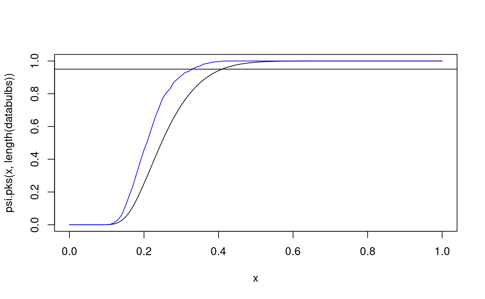

Computations for Lectures W7a-W8b - Practical Statistics I (2016/2017)
Edited examples from the lectures
Georgi N. Boshnakov
March 2017
ks.spin.RmdPackages and functions for topic “goodness of fit”
Package “psistat”
Package psistat provides some useful functions for this topic. You can install it on your own computers from the web page of the course (if you have not done this yet).
library(psistat)
The names of the functions in “psistat” start with “psi.”. You can learn more about them using the help system. For example:
Other libraries providing relevant functions:
library(nortest) # for Lilliefors test ?lillie.test
library(e1071) # for probplot ?probplot
Dataset Oxboys is in package “mlmRev”
library(mlmRev) # ?Oxboys
Miscellaneous: use this command to plot in a new window:
dev.new()Some random samples for the following examples.
Empirical cdf (ecdf)
x20.ecdf <- ecdf(x20) # its ecdf x20.ecdf
## Empirical CDF
## Call: ecdf(x20)
## x[1:20] = -2.3457, -1.2071, -0.99839, ..., 1.0844, 2.4158x20.ecdf is a function - we can use it as any other R function:
x20.ecdf(0)
## [1] 0.65x20.ecdf(10)
## [1] 1Here we plot the ecdf and overlay the cdf used to simulate the data. The sample is small, so the two do not match very closely:
At the places were the ecdf jumps, the value is the one after the jump (indicated by the filled points). Here is a histogram with overlayed pdf for comparison.

For larger samples the ecdf is very good estimator of the underlying cdf:
… and an even larger sample:
x500.ecdf <- ecdf(x500) # its ecdf plot(x500.ecdf) # ecdf and cdf overlayed curve(pnorm, add = TRUE, col = "red") ## This shows how to add the curve with non-default values of the ## arguments. This simply illustrates the technique: norm2 <- function(x) pnorm(x, mean = 2) curve(norm2, add = TRUE, col = "blue")
Empirical quantiles
# ?quantile quantile(x500, probs=0.5)
## 50%
## -0.005702427## 25% 50% 75%
## -0.700895608 -0.005702427 0.604292246quantile(x20, 0.5)
## 50%
## -0.5288207Examples with psi.eqf
Empirical quantile function (from package “psistat”)
?psi.eqfThe eqf of a small sample:
## Warning in qnorm(x): NaNs produced# plot(x200) x200ecdf <- ecdf(x200) x200ecdf(0)
## [1] 0.54## 25% 50% 75%
## -0.65421071 -0.08424212 0.62585887x200eqf <- psi.eqf(x200) x200eqf(0.5)
## [1] -0.09979059x200eqf(0.25)
## [1] -0.6696336plot(x200eqf, main = "Eqf of x200")
x500.eqf <- psi.eqf(x500) # a larger sample plot(x500.eqf, main = "Eqf of x500") curve(qnorm, add = TRUE, col = "blue")
## Warning in qnorm(x): NaNs producedQQ-plots
DIY qq-plots
We follow the procedure given in the notes: prepare points p, evaluate the scores s, compute the order statistics and plot. Does x20 come from N(0,1)?
n <- length(x20) n
## [1] 20p <- (1:n - 0.5) # to check that it gives 0.5, 1.5, ..., 19.5 p
## [1] 0.5 1.5 2.5 3.5 4.5 5.5 6.5 7.5 8.5 9.5 10.5 11.5 12.5 13.5 14.5
## [16] 15.5 16.5 17.5 18.5 19.5p <- (1:n - 0.5)/n p
## [1] 0.025 0.075 0.125 0.175 0.225 0.275 0.325 0.375 0.425 0.475 0.525 0.575
## [13] 0.625 0.675 0.725 0.775 0.825 0.875 0.925 0.975s <- qnorm(p) # scores x20.sorted <- sort(x20) # order statistics plot(s, x20.sorted) # qq-plot abline(0, 1, col = "blue") # plot the reference line
Does x2 come from N(0,1)?
n <- length(x2) p <- ((1:n) - 0.5) / n s2 <- qnorm(p) x2s <- sort(x2) plot(s2, x2s) abline(0, 1, col = "red")
Does x200 come from N(0,1)?
n <- length(x200) p <- ((1:n) - 0.5) / n si <- qnorm(p) x200.sorted <- sort(x200) plot(si, x200.sorted) abline(0, 1, col = "blue")
Does x200 come from Student-t with 3 d.f.?
Does x500 come from N(0,1)?
n <- length(x500) # x500 p <- (1:n - 0.5)/n s <- qnorm(p) x500.sorted <- sort(x500) plot(s, x500.sorted) abline(0,1) # various ways to overlay a line lm(x500.sorted ~ s)
##
## Call:
## lm(formula = x500.sorted ~ s)
##
## Coefficients:
## (Intercept) s
## -0.03162 1.00690qq-plots for x500 The following examples are of qq-plots for x500 with various non-matching distributions.
x500ms.sorted <- sort(x500ms) p <- ((1:500) - 0.5)/500 s <- qnorm(p) plot(s, x500ms.sorted) abline(0, 1, col = "blue") lmfit500 <- lm(x500ms.sorted ~ s) summary(lmfit500)
##
## Call:
## lm(formula = x500ms.sorted ~ s)
##
## Residuals:
## Min 1Q Median 3Q Max
## -1.34243 -0.04548 0.02041 0.07568 0.24411
##
## Coefficients:
## Estimate Std. Error t value Pr(>|t|)
## (Intercept) 0.958476 0.006293 152.3 <2e-16 ***
## s 2.889440 0.006301 458.6 <2e-16 ***
## ---
## Signif. codes: 0 '***' 0.001 '**' 0.01 '*' 0.05 '.' 0.1 ' ' 1
##
## Residual standard error: 0.1407 on 498 degrees of freedom
## Multiple R-squared: 0.9976, Adjusted R-squared: 0.9976
## F-statistic: 2.103e+05 on 1 and 498 DF, p-value: < 2.2e-16abline(lmfit500, col = "red")
qq-plot example with an exponential distribution. First generate some data to work with: xe might represent lifetime of bulbs (incandescent have typical expected life equal to 1500 hours).
hist(xe)
Non-diy qq-plots
qqnorm produces a normal qq-plot, i.e. a qq-plot for hypothesised normal distribution:
qqnorm(x500) # qqnorm
qqnorm(xe) # no match here
probplot() is another function for qq-plots. Without further arguments it produces a normal plot:
For other hypothesised distributions the relevant quantile function should be given. We often need to define the function ourselves.
#
# this doesn't work since probplot insists on naming the argument 'p'
# qexp1500 <- function(x) qexp(x, rate=1/1500)
#
# here we oblige.This function computes quantiles for exponential distribution with mean 1500:
qexp1500 <- function(p) qexp(p, rate = 1/1500)
(Note that probplot insists that the first argument is called ‘p’.) Compare:
qexp1500(0.5)
## [1] 1039.721qexp(0.5, rate=1/1500)
## [1] 1039.721Create the plot:
probplot(xe, qexp1500)
mean(x2a)
## [1] 5.11848sd(x2a)
## [1] 2.120752example: bulbs.txt
bulbs <- scan("bulbs.txt") bulbs
## [1] 1615.3880 1751.3540 951.2327 3727.3430 1333.2010 914.8320 507.4933
## [8] 213.3106 862.1596 2217.3740e100 <- rexp(100, rate=1/1500) p <- ((1:100) - 0.5)/100 s <- qexp(p, rate=1/1500) e100s <- sort(e100) plot(s, e100s) abline(0,1)
e1000 <- rexp(1000, rate=1/1500) p <- ((1:1000) - 0.5)/1000 s <- qexp(p, rate=1/1500) e1000s <- sort(e1000) plot(s, e1000s) abline(0,1)
probplot(e1000, qnorm)
Distributions of order statistics
Approx mean and variance of order statistics example in Notes, p. 69
first using formulae on pp. 68-69
qnorm(4/(19+1))
## [1] -0.8416212ex <- qnorm(4/(19+1)) ex
## [1] -0.8416212exvar <- 4*(19-4+1)/((19+1)^2*(19+2))/dnorm(ex)^2 exvar
## [1] 0.09720817… then via simulation
and so on until y[1000] … :)
# ... but better use a single command for(i in 1:1000) y[i] <- sort(rnorm(19))[4] hist(y, freq=FALSE) # estimate density
mean(y) # estimate mean
## [1] -0.8928535var(y) # estimate variance
## [1] 0.1049445this is an alternative to the ‘for’ loop (explain “replicate”)
## [1] -0.8994723var(y)
## [1] 0.1124937## 25% 50% 75%
## -1.1191086 -0.8994697 -0.6677008## [1] -0.6385599x4[2] <- sort(rnorm(19))[4] # ... and so on; let's do it with a single command: for(i in 1:N) x4[i] <- sort(rnorm(19))[4]
Explore the distribution of the fourth order statistic:
mean(x4)
## [1] -0.8927811var(x4)
## [1] 0.1052386hist(x4)
Inverse PIT
DIY generation of a random sample from distribution Expo(1/2) First generate a sample from the uniform distribution.
u <- runif(8) u
## [1] 0.96726824 0.39173353 0.93379904 0.76794545 0.32535914 0.57392644 0.06652616
## [8] 0.87910583Evaluate the quantiles of the required distribution (Expo(1/2) here) for the values in the U(0,1) random sample:
y <- -2*log(1-u) # DIY quantile function of Expo(1/2) y
## [1] 6.8388189 0.9942844 5.4301207 2.9215656 0.7871496 1.7062866 0.1376847
## [8] 4.2256796y1 <- qexp(u, rate = 1/2) # built-in quantile function y1
## [1] 6.8388189 0.9942844 5.4301207 2.9215656 0.7871496 1.7062866 0.1376847
## [8] 4.2256796The results are the same (so, qexp uses the formula -log(1-u)/lambda):
all(y == y1)
## [1] TRUEKolmogorov-Smirnov tests
##
## One-sample Kolmogorov-Smirnov test
##
## data: x
## D = 0.087857, p-value = 0.423
## alternative hypothesis: two-sidedks.test(x, "pexp", rate=10)
##
## One-sample Kolmogorov-Smirnov test
##
## data: x
## D = 0.56113, p-value < 2.2e-16
## alternative hypothesis: two-sided##
## One-sample Kolmogorov-Smirnov test
##
## data: x
## D = 0.087857, p-value = 0.423
## alternative hypothesis: two-sidedpsi.Dn(x, pexp2)
## [1] 0.08785689x <- runif(10) x
## [1] 0.60772038 0.71454058 0.31063085 0.40909066 0.05476674 0.87197316
## [7] 0.80187151 0.04541741 0.35022657 0.16252157y <- -1/2*log(1-x) y
## [1] 0.46789019 0.62682769 0.18598919 0.26304634 0.02816177 1.02775768
## [7] 0.80941975 0.02324056 0.21556577 0.08867989y1 <- qexp(x, rate=2) y1
## [1] 0.46789019 0.62682769 0.18598919 0.26304634 0.02816177 1.02775768
## [7] 0.80941975 0.02324056 0.21556577 0.08867989all(y==y1) # TRUE (so, qexp uses the above formula
## [1] TRUEThe cdf of the test statistic in KS test See examples for psi.pks.
# ?psi.pks psi.pks(0.6239385,4)
## [1] 0.95psi.pks(0.2940753,20)
## [1] 0.95psi.pks(0.1340279,100)
## [1] 0.95psi.pks(0.04294685,1000)
## [1] 0.95Compare the distribution of the test statistic for various sample sizes:
xi <- seq(0,1,length=100) # some x values plot(xi,psi.pks(xi,4)) lines(xi,psi.pks(xi,4)) # cdf of D_4 lines(xi,psi.pks(xi,50),col="blue") # overlay the cdf of D_{50} lines(xi,psi.pks(xi,100),col="red") # overlay the cdf of D_{100} abline(h=0.95, col="brown") lines(xi,psi.pks(xi,1000),col="green") # overlay the cdf of D_{1000}
The abscissa of the intersection of the brown line with each of the curves gives the corresponding critical value of the KS test. Notice that for larger samples the critical value is smaller. In other words, smaller deviations from the hypothesised distribution function are considered significant. Similar to above using curve():
curve(psi.pks(x,4), from=0, to=1) # cdf of D_4 curve(psi.pks(x,10), from=0, to=1, col="blue", add=TRUE) # cdf of D_10 curve(psi.pks(x,50), from=0, to=1, col="brown", add=TRUE) # cdf of D_50 curve(psi.pks(x,100), from=0, to=1, col="red", add=TRUE) # cdf of D_100 curve(psi.pks(x,1000), from=0, to=1, col="green", add=TRUE) # cdf of D_1000 abline(h=0.95, col="brown")
DIY Dn
x10 <- rnorm(10)
diy Dn for H_0 = cdf of N(0,1)
u10 <- pnorm(x10) u10
## [1] 0.50005467 0.94167283 0.57367674 0.25966462 0.79541192 0.95330771
## [7] 0.33814719 0.06689247 0.81922995 0.23913859## [1] 0.06689247 0.23913859 0.25966462 0.33814719 0.50005467 0.57367674
## [7] 0.79541192 0.81922995 0.94167283 0.95330771n <- 10 x10Dn <- max((1:n)/n - u10, u10 - (0:(n-1)/n)) x10Dn
## [1] 0.1954119now use psi.Dn to compute Dn, should give the same result.
psi.Dn(x10)
## [1] 0.1954119# KS test # # ?psi.Dn x
## [1] 0.60772038 0.71454058 0.31063085 0.40909066 0.05476674 0.87197316
## [7] 0.80187151 0.04541741 0.35022657 0.16252157psi.Dn(x)
## [1] 0.5181127The value of the statistic is the same as that from ks.test:
ks.test(x, pnorm)
##
## One-sample Kolmogorov-Smirnov test
##
## data: x
## D = 0.51811, p-value = 0.005074
## alternative hypothesis: two-sided## D
## TRUE##
## One-sample Kolmogorov-Smirnov test
##
## data: x
## D = 0.99942, p-value < 2.2e-16
## alternative hypothesis: two-sidedKS test 2013/2014 chunk
x20## [1] -1.20706575 0.27742924 1.08444118 -2.34569770 0.42912469 0.50605589
## [7] -0.57473996 -0.54663186 -0.56445200 -0.89003783 -0.47719270 -0.99838644
## [13] -0.77625389 0.06445882 0.95949406 -0.11028549 -0.51100951 -0.91119542
## [19] -0.83717168 2.41583518## [1] 0.003760506 0.017709607 0.022793726 0.025256282 0.025886351 0.027518385
## [7] 0.029504455 0.036938855 0.037356192 0.038088186 0.039586504 0.041052895
## [13] 0.059956038 0.071083274 0.086711761 0.099319695 0.106203872 0.153804251
## [19] 0.169087002 0.385111807pnorm(x20os, mean=3, sd=2) - (0:(20-1))/n
## [1] 0.003760506 -0.082290393 -0.177206274 -0.274743718 -0.374113649
## [6] -0.472481615 -0.570495545 -0.663061145 -0.762643808 -0.861911814
## [11] -0.960413496 -1.058947105 -1.140043962 -1.228916726 -1.313288239
## [16] -1.400680305 -1.493796128 -1.546195749 -1.630912998 -1.514888193wrk1 <- pnorm(x20os, mean=3, sd=2) - (0:(20-1))/20 wrk2 <- (1:20)/20 - pnorm(x20os, mean=3, sd=2) max(wrk1,wrk2)
## [1] 0.780913Dn.x20 <- max(wrk1,wrk2) Dn.x20
## [1] 0.780913psi.Dn(x20)
## [1] 0.2833875# ?psi.Dn psi.Dn(x20, cdf=pnorm, mean=3, sd=2)
## [1] 0.780913ks.test(x20, pnorm, mean=3, sd=2)
##
## One-sample Kolmogorov-Smirnov test
##
## data: x20
## D = 0.78091, p-value = 2.034e-13
## alternative hypothesis: two-sided# ?psi.pks psi.pks(0.5, n=20)
## [1] 0.9999621Example migraine
# # file.show("migraine.txt") datamig <- scan("migraine.txt") datamig
## [1] 98 90 155 86 80 84 70 128 93 40 108 90 130 48 55 106 145 126 100
## [20] 115 75 95 38 66 63 32 105 118 21 142## [1] 98 90 155 86 80 84 70 128 93 40 108 90 130 48 55 106 145 ## [18] 126 100 115 75 95 38 66 63 32 105 118 21 142 ks.test(datamig, pnorm, mean=90, sd=35)
## Warning in ks.test(datamig, pnorm, mean = 90, sd = 35): ties should not be
## present for the Kolmogorov-Smirnov test##
## One-sample Kolmogorov-Smirnov test
##
## data: datamig
## D = 0.066667, p-value = 0.9993
## alternative hypothesis: two-sided##
## One-sample Kolmogorov-Smirnov test
##
## data: unique(datamig)
## D = 0.061367, p-value = 0.9996
## alternative hypothesis: two-sided## [1] 0.06136731Example from help page of psi.pks
diy Dn
x <- unique(datamig) x
## [1] 98 90 155 86 80 84 70 128 93 40 108 130 48 55 106 145 126 100 115
## [20] 75 95 38 66 63 32 105 118 21 142xs <- sort(x) xs
## [1] 21 32 38 40 48 55 63 66 70 75 80 84 86 90 93 95 98 100 105
## [20] 106 108 115 118 126 128 130 142 145 155## [1] 0.06136731Dn using psi.Dn
## [1] 0.06136731##
## One-sample Kolmogorov-Smirnov test
##
## data: unique(datamig)
## D = 0.061367, p-value = 0.9996
## alternative hypothesis: two-sided## [1] 0.06136731psi.pks(migDn, n)
## [1] 0.00040266941 - psi.pks(migDn, n)
## [1] 0.9995973Lilliefors test for normality
apropos("psi.") ?psi.pkls.exp ?psi.plks.exp ?psi.qlks.exp
This package provides lillie.test():
library(nortest) # ?lillie.test lillie.test(x20)
##
## Lilliefors (Kolmogorov-Smirnov) normality test
##
## data: x20
## D = 0.1884, p-value = 0.06101Further examples
Example: moths
# file.show("mothsontrees.txt") datamoths <- scan("mothsontrees.txt") datamoths
## [1] 1.4 2.6 3.3 4.2 4.7 5.6 6.4 7.7 9.3 10.6 11.5 12.4 18.6 22.3# ?punif ks.test(datamoths, punif, min=0, max=25)
##
## One-sample Kolmogorov-Smirnov test
##
## data: datamoths
## D = 0.36114, p-value = 0.03843
## alternative hypothesis: two-sidedAlternatively:
##
## One-sample Kolmogorov-Smirnov test
##
## data: datamoths
## D = 0.36114, p-value = 0.03843
## alternative hypothesis: two-sided## [1] 14n <- 14 (1:n)/n
## [1] 0.07142857 0.14285714 0.21428571 0.28571429 0.35714286 0.42857143
## [7] 0.50000000 0.57142857 0.64285714 0.71428571 0.78571429 0.85714286
## [13] 0.92857143 1.00000000(1:n)/n - val
## [1] 0.01542857 0.03885714 0.08228571 0.11771429 0.16914286 0.20457143
## [7] 0.24400000 0.26342857 0.27085714 0.29028571 0.32571429 0.36114286
## [13] 0.18457143 0.10800000val - (0:(n-1))/n
## [1] 0.05600000 0.03257143 -0.01085714 -0.04628571 -0.09771429 -0.13314286
## [7] -0.17257143 -0.19200000 -0.19942857 -0.21885714 -0.25428571 -0.28971429
## [13] -0.11314286 -0.03657143max( (1:n)/n - val, val - (0:(n-1))/n )
## [1] 0.3611429ks.test(datamoths, "punif", min=0, max=25)
##
## One-sample Kolmogorov-Smirnov test
##
## data: datamoths
## D = 0.36114, p-value = 0.03843
## alternative hypothesis: two-sided## xi f1(xi)
## [1,] 0.00 0.000000e+00
## [2,] 0.01 0.000000e+00
## [3,] 0.02 0.000000e+00
## [4,] 0.03 0.000000e+00
## [5,] 0.04 1.007287e-18
## [6,] 0.05 2.105987e-11ks.test(datamoths, "punif", min=0, max=25)
##
## One-sample Kolmogorov-Smirnov test
##
## data: datamoths
## D = 0.36114, p-value = 0.03843
## alternative hypothesis: two-sidedd14 <- max( (1:n)/n - val, val - (0:(n-1))/n ) d14
## [1] 0.36114291 - psi.pks(d14,14)
## [1] 0.03842822ks.test(datamoths, "punif", min=0, max=25)
##
## One-sample Kolmogorov-Smirnov test
##
## data: datamoths
## D = 0.36114, p-value = 0.03843
## alternative hypothesis: two-sidedExample: datasales
##
## One-sample Kolmogorov-Smirnov test
##
## data: datasales
## D = 0.26296, p-value = 0.6278
## alternative hypothesis: two-sidedExample: barbiturate
# file.show("barbiturate.txt") databarbi <- scan("barbiturate.txt") databarbi
## [1] 2.70 2.20 2.80 0.90 0.30 4.30 6.20 1.25 0.90 0.60 3.00 1.60 3.20 4.10 0.79
## [16] 3.90 0.72 1.30 7.70 2.50 1.10 6.70 1.70 3.50 5.10 1.66 2.00 3.70 1.12 0.64
## [31] 2.80 6.10lillie.test(databarbi)
##
## Lilliefors (Kolmogorov-Smirnov) normality test
##
## data: databarbi
## D = 0.13552, p-value = 0.1416## Warning in ks.test(databarbi, pnorm, mean = mean(databarbi), sd =
## sd(databarbi)): ties should not be present for the Kolmogorov-Smirnov test##
## One-sample Kolmogorov-Smirnov test
##
## data: databarbi
## D = 0.13552, p-value = 0.5993
## alternative hypothesis: two-sidedExample: bulbs1000
databulbs <- scan("bulbs1000.txt") databulbs
## [1] 730 1648 1321 319 696 21 192 780 1659 167ks.test(databulbs, "pexp", rate=2)
##
## One-sample Kolmogorov-Smirnov test
##
## data: databulbs
## D = 1, p-value < 2.2e-16
## alternative hypothesis: two-sidedks.test(databulbs, "pexp", rate=1/1000)
##
## One-sample Kolmogorov-Smirnov test
##
## data: databulbs
## D = 0.19033, p-value = 0.7978
## alternative hypothesis: two-sidedmean(databulbs)
## [1] 753.31/mean(databulbs)
## [1] 0.001327492# apropos("psi.") # ?psi.lks.exp.test psi.lks.exp.test(databulbs)
##
## One-sample Lilliefors test for exponential distribution
##
## data: databulbs
## Dn.Lillie.exp = 0.20305, p-value = 0.525
## alternative hypothesis: two-sidedExample: bulbs1500
databulbs15 <- scan("bulbs1500.txt") psi.lks.exp.test(databulbs15)
##
## One-sample Lilliefors test for exponential distribution
##
## data: databulbs15
## Dn.Lillie.exp = 0.25759, p-value = 0.207
## alternative hypothesis: two-sidedpsi.lks.exp.test(databulbs15)
##
## One-sample Lilliefors test for exponential distribution
##
## data: databulbs15
## Dn.Lillie.exp = 0.25759, p-value = 0.221
## alternative hypothesis: two-sidedpsi.lks.exp.test(databulbs15, Nsim=10000)
##
## One-sample Lilliefors test for exponential distribution
##
## data: databulbs15
## Dn.Lillie.exp = 0.25759, p-value = 0.2156
## alternative hypothesis: two-sided# example: bulbs: is this the same as bulbs1000? # bulbs
## [1] 1615.3880 1751.3540 951.2327 3727.3430 1333.2010 914.8320 507.4933
## [8] 213.3106 862.1596 2217.3740mean(bulbs)
## [1] 1409.369ks.test(bulbs, pexp, rate = 1/1500)
##
## One-sample Kolmogorov-Smirnov test
##
## data: bulbs
## D = 0.23717, p-value = 0.5504
## alternative hypothesis: two-sidedks.test(bulbs, pexp, rate = 1/1000)
##
## One-sample Kolmogorov-Smirnov test
##
## data: bulbs
## D = 0.37775, p-value = 0.08623
## alternative hypothesis: two-sidedCarry out Lilliefors test (simulation is used, so slight differences in repeated calculation)
psi.lks.exp.test(bulbs)
##
## One-sample Lilliefors test for exponential distribution
##
## data: bulbs
## Dn.Lillie.exp = 0.25759, p-value = 0.221
## alternative hypothesis: two-sidedpsi.lks.exp.test(bulbs)
##
## One-sample Lilliefors test for exponential distribution
##
## data: bulbs
## Dn.Lillie.exp = 0.25759, p-value = 0.222
## alternative hypothesis: two-sidedpsi.lks.exp.test(bulbs, Nsim = 10000) # for more precision
##
## One-sample Lilliefors test for exponential distribution
##
## data: bulbs
## Dn.Lillie.exp = 0.25759, p-value = 0.2223
## alternative hypothesis: two-sided(semi-)diy (full diy would also calc. the Dn stat. by diy)
crit. value at alpha=0.05
DnN0p05 <- psi.qlks.exp(1-0.05, length(z))
or, for more precision,
DnN0p05 <- psi.qlks.exp(1-0.05, length(z), Nsim=10000) zDn > DnN0p05
## 0.95
## FALSE# p-value 1 - psi.plks.exp(zDn, length(z), Nsim=10000)
## 0.257590782926558
## 0.2234Example: Oxboys (needs clean-up)
library(mlmRev)
## Loading required package: lme4## Loading required package: Matrixsummary(Oxboys) # Oxboys are from library(mlmRev)
## Subject age height Occasion
## 1 : 9 Min. :-1.00000 Min. :126.2 1 :26
## 10 : 9 1st Qu.:-0.46300 1st Qu.:143.8 2 :26
## 11 : 9 Median :-0.00270 Median :149.5 3 :26
## 12 : 9 Mean : 0.02263 Mean :149.5 4 :26
## 13 : 9 3rd Qu.: 0.55620 3rd Qu.:155.5 5 :26
## 14 : 9 Max. : 1.00550 Max. :174.8 6 :26
## (Other):180 (Other):78Oxboys[1:5,]
## Subject age height Occasion
## 1 1 -1.0000 140.5 1
## 2 1 -0.7479 143.4 2
## 3 1 -0.4630 144.8 3
## 4 1 -0.1643 147.1 4
## 5 1 -0.0027 147.7 5Oxboys[1:5, "height"]
## [1] 140.5 143.4 144.8 147.1 147.7dataoxheight <- Oxboys[,"height"] plot(dataoxheight)
summary(dataoxheight)
## Min. 1st Qu. Median Mean 3rd Qu. Max.
## 126.2 143.8 149.5 149.5 155.5 174.8hist(dataoxheight, freq=FALSE) # todo: overlay exp pdf?
boxplot(dataoxheight)
qqnorm(dataoxheight)
library(nortest) lillie.test(dataoxheight)
##
## Lilliefors (Kolmogorov-Smirnov) normality test
##
## data: dataoxheight
## D = 0.042614, p-value = 0.378## Warning in ks.test(dataoxheight, pnorm, mean = mean(dataoxheight), sd =
## sd(dataoxheight)): ties should not be present for the Kolmogorov-Smirnov test##
## One-sample Kolmogorov-Smirnov test
##
## data: dataoxheight
## D = 0.042614, p-value = 0.7891
## alternative hypothesis: two-sided##
## One-sample Kolmogorov-Smirnov test
##
## data: unique(dataoxheight)
## D = 0.043867, p-value = 0.8932
## alternative hypothesis: two-sided# add some jitter to remove ties; ?psi.jitter # ?psi.jitter ks.test(psi.jitter(dataoxheight,amount=0.5), pnorm, mean=mean(dataoxheight), sd=sd(dataoxheight))
##
## One-sample Kolmogorov-Smirnov test
##
## data: psi.jitter(dataoxheight, amount = 0.5)
## D = 0.035408, p-value = 0.931
## alternative hypothesis: two-sidedks.test(psi.jitter(dataoxheight,amount=0.5), pnorm, mean=mean(dataoxheight), sd=sd(dataoxheight))
##
## One-sample Kolmogorov-Smirnov test
##
## data: psi.jitter(dataoxheight, amount = 0.5)
## D = 0.030803, p-value = 0.9795
## alternative hypothesis: two-sided#?psi.Dn psi.Dn(dataoxheight, pnorm, mean=mean(dataoxheight), sd=sd(dataoxheight), ties.jitter=TRUE)
## [1] 0.04111807# ?psi.jitter any(duplicated(dataoxheight))
## [1] TRUExj <- psi.jitter(dataoxheight, 0.5) any(duplicated(xj))
## [1] FALSE##
## One-sample Kolmogorov-Smirnov test
##
## data: xj
## D = 0.045339, p-value = 0.7219
## alternative hypothesis: two-sided########################################### datamig
## [1] 98 90 155 86 80 84 70 128 93 40 108 90 130 48 55 106 145 126 100
## [20] 115 75 95 38 66 63 32 105 118 21 142ls(pattern="data*")
## [1] "databarbi" "databulbs" "databulbs15" "datamig" "datamoths"
## [6] "dataoxheight" "datasales"databarbi## [1] 2.70 2.20 2.80 0.90 0.30 4.30 6.20 1.25 0.90 0.60 3.00 1.60 3.20 4.10 0.79
## [16] 3.90 0.72 1.30 7.70 2.50 1.10 6.70 1.70 3.50 5.10 1.66 2.00 3.70 1.12 0.64
## [31] 2.80 6.10databulbs## [1] 730 1648 1321 319 696 21 192 780 1659 167Example: checking normality of residuals from lm()
datamilk <- data.frame( x = c(42.7,40.2,38.2,37.6,32.2,32.2,28,27.2,26.6,23,22.7,21.8,21.3,20.2), y = c(1.2,1.16,1.07,1.13,0.96,1.07,0.85,0.87,0.77,0.74,0.76,0.69,0.72,0.64) ) fitmilk <- lm(y~x, data=datamilk) datamilk
## x y
## 1 42.7 1.20
## 2 40.2 1.16
## 3 38.2 1.07
## 4 37.6 1.13
## 5 32.2 0.96
## 6 32.2 1.07
## 7 28.0 0.85
## 8 27.2 0.87
## 9 26.6 0.77
## 10 23.0 0.74
## 11 22.7 0.76
## 12 21.8 0.69
## 13 21.3 0.72
## 14 20.2 0.64fitmilk##
## Call:
## lm(formula = y ~ x, data = datamilk)
##
## Coefficients:
## (Intercept) x
## 0.17558 0.02458summary(fitmilk)
##
## Call:
## lm(formula = y ~ x, data = datamilk)
##
## Residuals:
## Min 1Q Median 3Q Max
## -0.059293 -0.024055 -0.005221 0.024711 0.103082
##
## Coefficients:
## Estimate Std. Error t value Pr(>|t|)
## (Intercept) 0.175576 0.046399 3.784 0.0026 **
## x 0.024576 0.001523 16.139 1.68e-09 ***
## ---
## Signif. codes: 0 '***' 0.001 '**' 0.01 '*' 0.05 '.' 0.1 ' ' 1
##
## Residual standard error: 0.04203 on 12 degrees of freedom
## Multiple R-squared: 0.956, Adjusted R-squared: 0.9523
## F-statistic: 260.5 on 1 and 12 DF, p-value: 1.678e-09# plot(fitmilk) resfitmilk <- residuals(fitmilk) lillie.test(resfitmilk)
##
## Lilliefors (Kolmogorov-Smirnov) normality test
##
## data: resfitmilk
## D = 0.15457, p-value = 0.4848todo: also qq-plot? ## Lilliefors test for exponentiality
?psi.plks ?psi.plks.exp ?psi.lks.exp.test ?psi.Dn ?psi.pks
##
## One-sample Kolmogorov-Smirnov test
##
## data: databulbs
## D = 1, p-value < 2.2e-16
## alternative hypothesis: two-sidedmean(databulbs)
## [1] 753.31/mean(databulbs)
## [1] 0.001327492ks.test(databulbs, "pexp", rate=1/1000)
##
## One-sample Kolmogorov-Smirnov test
##
## data: databulbs
## D = 0.19033, p-value = 0.7978
## alternative hypothesis: two-sidedpsi.plks.exp(0.203, df = length(databulbs))
## 0.203
## 0.491 - psi.plks.exp(0.203, df = length(databulbs))
## 0.203
## 0.549curve(psi.pks(x,length(databulbs)), from=0, to=1) curve(psi.plks.exp(x,length(databulbs)), from=0, to=1, col="blue", add=TRUE) abline(h=0.95)

# ?names # ?c databulbs
## [1] 730 1648 1321 319 696 21 192 780 1659 167ks.test(databulbs, "pexp", rate=1/1000)
##
## One-sample Kolmogorov-Smirnov test
##
## data: databulbs
## D = 0.19033, p-value = 0.7978
## alternative hypothesis: two-sidedpsi.Dn(databulbs, "pexp", rate=1/1000)
## [1] 0.1903292q : P(Dn < q) = 0.95 for selected values of n
psi.pks(0.6239385, 4)
## [1] 0.95psi.pks(0.2940753, 20)
## [1] 0.95psi.pks(0.1340279, 100)
## [1] 0.95psi.pks(0.04294685, 1000) # asymptotic approximation
## [1] 0.95databulbs## [1] 730 1648 1321 319 696 21 192 780 1659 167psi.lks.exp.test(databulbs)
##
## One-sample Lilliefors test for exponential distribution
##
## data: databulbs
## Dn.Lillie.exp = 0.20305, p-value = 0.533
## alternative hypothesis: two-sidedlength(databulbs)
## [1] 10psi.plks.exp(0.203, df=10)
## 0.203
## 0.4781 - psi.plks.exp(0.203, df=10)
## 0.203
## 0.54